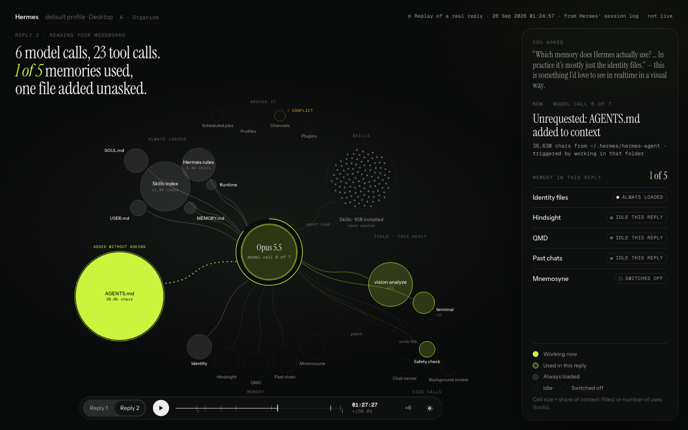
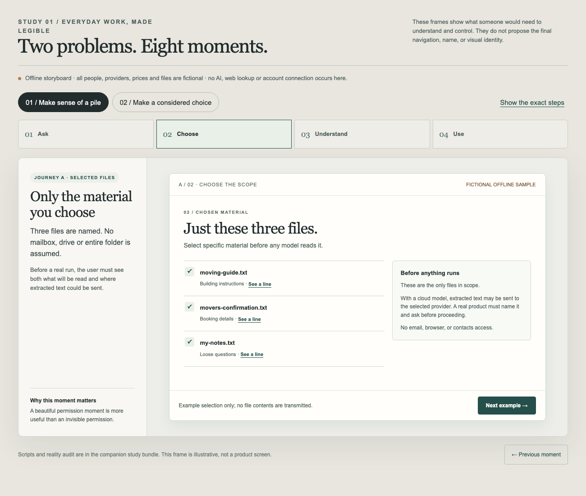

02 / Active research & prototyping
Make AI
visible.
A visual environment for understanding and directing AI systems.
The chat window hides too much: what the system knows, which memory it used, what it can do, what it touched, and where a decision came from. I am building a visual layer that makes those relationships legible so people can work with AI rather than operate it blind.
See the work ↓
The ambition
Understand first. Then take control.
I started with my own daily AI setup, because I could feel the gap between using it and understanding it. I want to see the whole picture: how instructions, memory, tools and specialist work fit together, and which of them actually mattered in a particular reply.
The longer-term aim is an approachable workspace for people who are visually minded but find advanced AI systems opaque. It should help a newcomer connect a supported setup, choose a real task, watch what happens and understand the result. Ease of connection is a goal, not a verified promise across every subscription or provider.
Evidence, not just a pitch
Test the experience against reality.
So far I have mapped the questions my own setup fails to answer, gathered visual references, built three directions against the same two recorded replies, and exercised their playback, theme and inspection controls in a browser. Those studies replay real traces; they are not live product integrations.
I chose the Organism direction and built a local live prototype that reads session logs. It can show the recorded model and tool activity, but it does not yet explain every memory or context item that influenced a reply. The images here show earlier design studies, not a finished product.
I have also built an offline, fictional journey study around ordinary work: selecting specific files, understanding what can be sent to a model, and seeing what an AI-assisted step would actually do. Its purpose is to expose missing permissions and unclear moments before claiming the flow works.

What comes next
Earn the first real “I get it.”
- Refine the chosen Organism direction against a concrete comprehension test, rather than appearance alone.
- Use the local prototype to test whether I can explain a real reply without reading logs, keeping observed activity separate from what the view cannot yet know.
- Put the same task in front of someone less technical, without coaching. Check what they think the system accessed, what it did, and what remains uncertain.
- Validate data coverage, supported integrations, permissions and error paths before making product-level claims.
This is an active, serious project—not a finished app or a promised release date. The design has to make difficult systems understandable without making them feel childish.
Earlier work
What I bring to this
Design & delivery — Agoos Apparel ↗
I joined as head art director and designer, and later ran the brand. Collections, suppliers, production, the shop and customer support: the visual idea had to survive every practical step.
Making it happen — Noisey Neighbours ↗
A partner and I carried the primary responsibility for a Stockholm rave collective, from branding and promotion to finance, logistics and running the night.
Campaign execution — Karnevalen ↗
I carried a music-release campaign from the label pitch through visual direction, video production, paid ads and launch. The work connected a consistent visual world to a release schedule and an audience.
Finding an audience — Consulting ↗
I coached people on personal branding, content strategy, offers and sales. That work made me practise explaining an idea clearly enough for someone else to act on it.
Compare notes
Building with AI?
I’m interested in talking with people building AI products or using agents in their teams—especially about where the tools become difficult to understand or trust.
Talk about the projectA closer look
Under the hood explores a narrower live-view prototype inside this larger direction. It is one experiment, not the whole product.
← All AI Labs projects